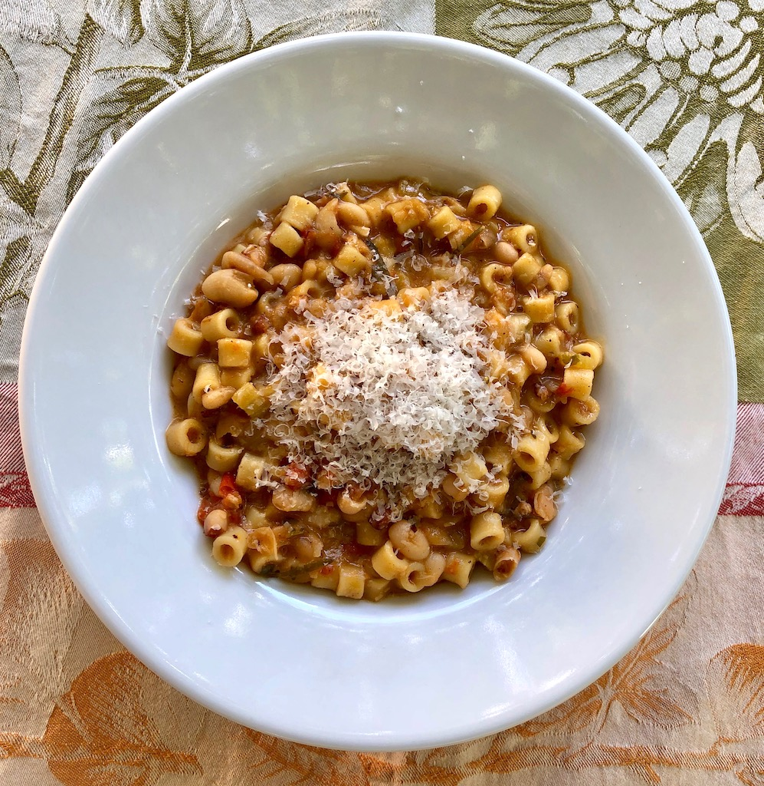

Pasta Fasul

Description
An Italian dish of beans, pasta, and tomato sauce.
This is an ancient recipe handed down by generation by generation in myfamily...or something.
Ingredients
- 2 can of cannelini beans
- 2 tbls olive oil
- 1 cup of ditalini pasta
- 1 can of crushed tomato
- 1 bunch of fresh basil, chopped
- 1 medium onion, chopped
- 7 cloves of garlic, minced
- salt to taste
- black pepper to taste
Steps
- Sautee onion in olive oil in large pot
- After about 5 minutes, add the garlic
- When garlic has started to brown, add the crushed tomato
- Let this simmer forever
- Start water to boil for pasta
- Cook pasta
- After pasta is finished, add pasta, basil, and beans to sauce
- Let simmer for 10 minutes, then enjoy immediately